Research project page
KAGE-Bench: Fast Known-Axis Visual Generalization Evaluation for Reinforcement Learning
KAGE-Bench is a fast JAX RL benchmark that isolates known-axis visual shifts to probe pixel-RL generalization failures.
Demos
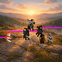
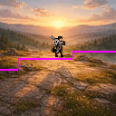
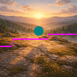
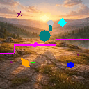
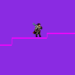
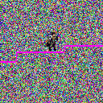
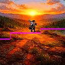
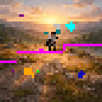
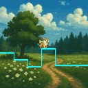
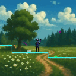
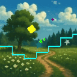
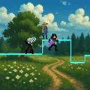
Abstract
Pixel-based reinforcement learning agents often fail under purely visual distribution shift even when latent dynamics and rewards are unchanged, but existing benchmarks entangle multiple sources of shift and hinder systematic analysis. We introduce KAGE-Env, a JAX-native 2D platformer that factorizes the observation process into independently controllable visual axes while keeping the underlying control problem fixed. By construction, varying a visual axis affects performance only through the induced state-conditional action distribution of a pixel policy, providing a clean abstraction for visual generalization. Building on this environment, we define KAGE-Bench, a benchmark of six known-axis suites comprising 34 train-evaluation configuration pairs that isolate individual visual shifts. Using a standard PPO-CNN baseline, we observe strong axis-dependent failures, with background and photometric shifts often collapsing success, while agent-appearance shifts are comparatively benign. Several shifts preserve forward motion while breaking task completion, showing that return alone can obscure generalization failures. Finally, the fully vectorized JAX implementation enables up to 33M environment steps per second on a single GPU, enabling fast and reproducible sweeps over visual factors.
BibTeX
@article{cherepanov2026kage,
title={KAGE-Bench: Fast Known-Axis Visual Generalization Evaluation for Reinforcement Learning},
author={Egor Cherepanov and Daniil Zelezetsky and Alexey K. Kovalev and Aleksandr I. Panov},
year={2026},
eprint={2601.14232},
archivePrefix={arXiv},
primaryClass={cs.LG},
url={https://arxiv.org/abs/2601.14232},
}